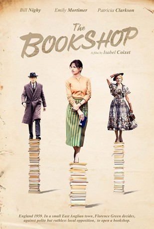

#9021 Der Buchladen der Florence Green
 
 IMDB-Wertung: 6.5 / 10
IMDB-Wertung: 6.5 / 10  Metascore: 62
Metascore: 62 
Florence Green (Emily Mortimer) ist eine verwitwete Frau, die in den späten 1950er Jahren in die kleine Küstenstadt Hardborough im Osten Englands zieht. Nachdem sie früh ihren Mann verloren hat, mit dem sie eine Liebe zu Literatur aller Art teilte, möchte sie ihren Traum verwirklichen und beschließt, eine kleine Buchhandlung eröffnen, um die anderen Bewohner des verschlafenen Städtchens mit aufregenden und interessanten Geschichten aus ihrer Lethargie zu reißen. Zunächst geht ihr Plan auf, die von ihr verkauften Bücher finden überall Anklang und sogar der eigenbrötlerische, zurückgezogen lebende Mr. Brundish (Bill Nighy) findet Gefallen am neuen Buchladen und dessen Besitzerin. Doch dann macht die einflussreiche Violet Gamart (Patricia Clarkson) Ärger, die zu den angesehensten Personen in Hardborough gehört und befürchtet, die Kontrolle über die Stadt und ihre Bewohner zu verlieren...
Jahr: 2017
Dauer: 112 Minuten
FSK:
Land: Spanien Studio: ArteTonspuren: DTS - ,
Untertitel: Deutsch,
Auflösung: 1080p (1920x1040) Größe: 5918 MB
Genre: Drama
Regisseur: Isabel Coixet
Drehbuch: Isabel Coixet
Soundtrack: Alfonso de Vilallonga
Darsteller:
 Emily Mortimer als Florence Green
Emily Mortimer als Florence Green Bill Nighy als Edmund Brundish
Bill Nighy als Edmund Brundish Patricia Clarkson als Violet Gamart
Patricia Clarkson als Violet Gamart- Hunter Tremayne als Mr. Keble
- Honor Kneafsey als Christine
- James Lance als Milo North
 Frances Barber als Jessie
Frances Barber als Jessie- Reg Wilson als General Gamart
- Nigel O'Neill als Mr. Deben
- Jorge Suquet als Mr. Thornton
- Adie Allen als Mrs. Traill
- Gary Piquer als Mr. Gill
- Mary O'Driscoll als Mrs. Keble
- Charlotte Vega als Kattie
- Nick Devlin als Harold
- Richard Felix als William
- Robbie Beggs als Book Delivery Man (uncredited)
 Julie Christie als Narrator (uncredited)
Julie Christie als Narrator (uncredited)- Michael Fitzgerald als Mr. Raven
- Lucy Beckwith als Guest One
- Harvey Bennett als Wally
- Lana O'Kell als Ivy Welford
- Lucy Tillett als Mrs. Gipping
- Toby Gibson als Peter Gipping
- Alfie Rowland als Thief
- Sophie Heydel als Reader 1
- Karen Ardiff als Mrs. Deben
- Barry Barnes als Inspector Sheppard
- Conor Smith als Boy in the First Row
- Rachel Gadd als Female Inspector
- James Murphy als Lionel Fitzhugh
- Franchesca McGill Perkins als Adult Christine
- Reed Brody als Charlie (uncredited)
- Ramón De España als Baronet (uncredited)
- Corey Millar als Passerby (uncredited)
- Max Mir als Son (uncredited)
Datei: X:\2017(A-F)\Buchladen der Florence Green, Der (2017, FSK, 1920x1040).mkv seit 24.05.2018
Festplatte: HD 2017(A-Z)-2018(A-F)
 Es gibt insgesamt 152 Filme in der Gruppe '2017(A-F)'
Es gibt insgesamt 152 Filme in der Gruppe '2017(A-F)'